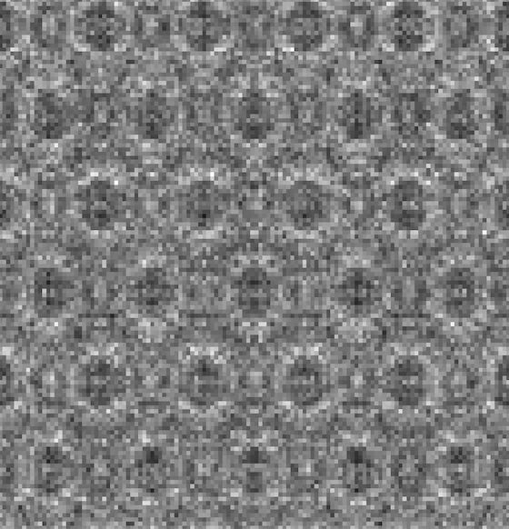

01 //Encoding
Wavefunction on qubits
An N×N wavefield lives on 2 log2N qubits through amplitude encoding.
QuScope rebuilds transmission electron microscopy image formation as quantum circuits. The electron wavefunction is amplitude-encoded on qubits, and every optical element (specimen phase grating, Fresnel propagation, objective lens) is a diagonal unitary between quantum Fourier transforms, validated against classical references.

The method
One circuit per image (CTEM) or per probe position (STEM); slices repeat for thick specimens.
An N×N wavefield lives on 2 log2N qubits through amplitude encoding.
Phase gratings, Fresnel propagation and the lens are diagonal unitaries between quantum Fourier transforms.
Noise-free circuits reproduce the classical reference implementations to unit fidelity.
Qiskit Aer statevector and shots, noise models, and IBM Quantum devices through one backend manager.
From column to circuit
The CTEM column, stage by stage: the classical image-formation model and its quantum-circuit counterpart. Hover or tap a stage to find it in the column (after Lam & dos Reis, arXiv:2602.13438, Fig. 1).
All unitary gates.
The catalogue
Pick a pipeline; the plate highlights the gates it uses.
Side A · Track 1
Side A · Track 2
Side B · Track 1
Side B · Track 2
Each box is one diagonal gate or Fourier transform.
The idea, in one sentence
Every optical element of the microscope becomes a diagonal unitary between two quantum Fourier transforms.
The family
QuScope aims to simulate the range of TEM techniques with quantum algorithms: imaging in the core package, ptychography and EELS in sister modules.
CTEM, STEM and multislice imaging as quantum circuits, with a 5th-order lens model, Kirkland potentials, materials workflows and Aer or IBM Quantum backends.
Dose limits of electron ptychography for beam-sensitive and in-situ specimens: STEM probe and multislice circuits validated against abTEM, electron counting, quantum and classical Fisher information, thermal vibrations, and gas and liquid cells.
Quantum algorithms for electron energy-loss spectroscopy, the next technique in the family.
Open-source tools linking materials databases to fault-tolerant quantum algorithms, starting with QMatBridge.
Roberto dos Reis's materials science lab at Northwestern University, home of the QuScope project.
In print
Preprints on arXiv, quantum physics with materials-science cross-lists.
The framework: conventional, multislice and scanning TEM pipelines as quantum circuits, validated against a classical reference, with resource estimates and an analysis of diagonal-gate synthesis on near-term hardware.
Read on arXiv →Phase-contrast image formation on a gate-based quantum computer, validated on MoS2 against classical multislice, with a discussion of where circuits may help: Fourier-space queries, global image statistics and phase-coherent observables.
Read on arXiv →Admit one · Get started
pip install quscope
Latest fixes (0.2.1): git clone -b v0.2.x https://github.com/QuScope/QuScope
from quscope.quantum_ctem import QuantumCTEMCircuit, QuantumCTEMParameters import numpy as np params = QuantumCTEMParameters(acceleration_voltage=200e3, grid_size=8, pixel_size=0.5, defocus=-659.7, cs=1.3) result = QuantumCTEMCircuit(params).simulate(np.random.rand(8, 8) * 100) print(result["intensity"].shape) # (8, 8)
Cite
@article{lam2026quscope,
title = {QuScope: An Open-Source Python Framework for Quantum-Circuit
Simulation of Transmission Electron Microscopy},
author = {Lam, Sean D. and dos Reis, Roberto},
journal = {arXiv preprint arXiv:2608.02782},
year = {2026}
}
@article{lam2026quantum,
title = {Quantum Algorithm Framework for Phase-Contrast Transmission
Electron Microscopy Image Simulation},
author = {Lam, Sean D. and dos Reis, Roberto},
journal = {arXiv preprint arXiv:2602.13438},
year = {2026}
}